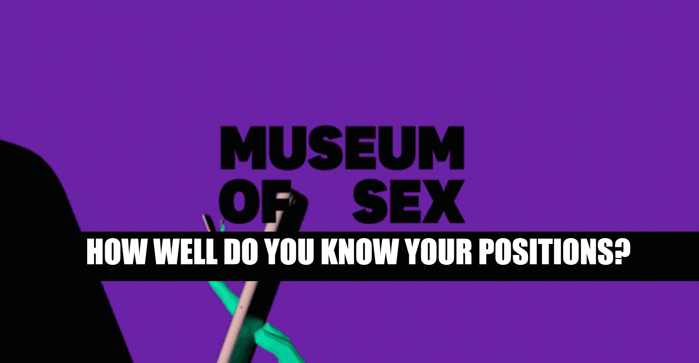
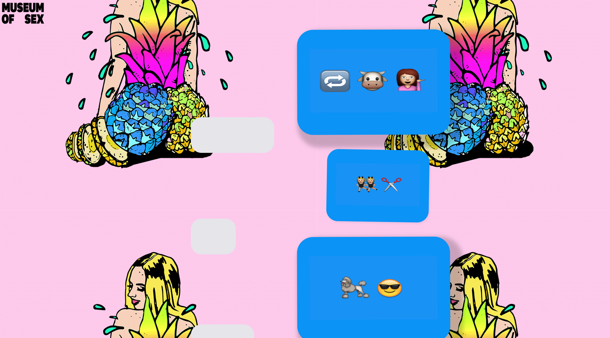

Varun Vig
Core Studio Interaction
Sign Project Documentation
Brief: Design a digital poster/website for a New York based cultural institution or museum that captures the essence of the institution.
Museum Of Choice: Museum Of Sex
Location: 233 5th Ave, New York, NY 10016
Timings: 10AM- 9PM
My piece is called "The Museum Of Sex'T". I picked the Museum Of Sex as its one of New Yorks biggest attractions, for both tourists and locals. The museum displays exhibits of sexual nature spanning across all different categories. Sex is a natural phenomenon known and experienced by every living being on Earth. In my project I wanted to focus on how the new generation of millennials have adapted and adopted the idea of sex in a cyber space.
My homepage displays the museums logo along with an animation of a hand holding a phone warping in and put of itself. The text that scrolls says "HOW WELL DO YOU KNOW YOUR POSITIONS?". My idea behind this is to set the user up for a small guessing game on the spot, that awaits him on the following page.
The idea behind main body of the page is for the tourist, local museum goer or sex enthusiast ~_* to take out a moment to expeirience this humourous guessing game. The viewer has to read a series of what appear to be three texts that have a combination of emojis to guess the correct sex position stated. After making the guess the viewer can hover over the empty text box to see if his guess was correct.
The project is designed to be interacted with on a kiosk that will be placed in the empty spaces of the museum. Cyber space can be used to inform/ promote and create different emotions within the individuals using it. I want to add a touch of humour to a topic that is still considered very taboo amongst many societies even though its just a natural process of life.